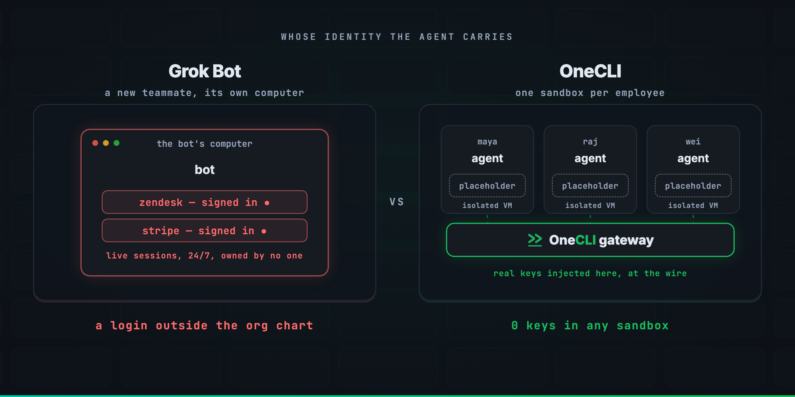
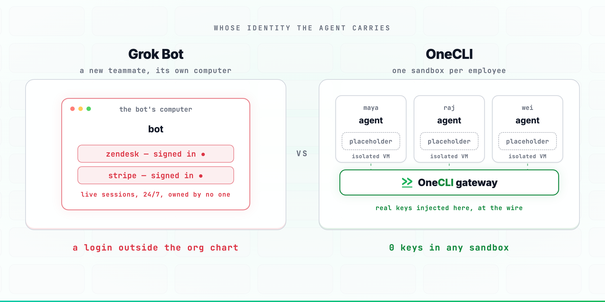
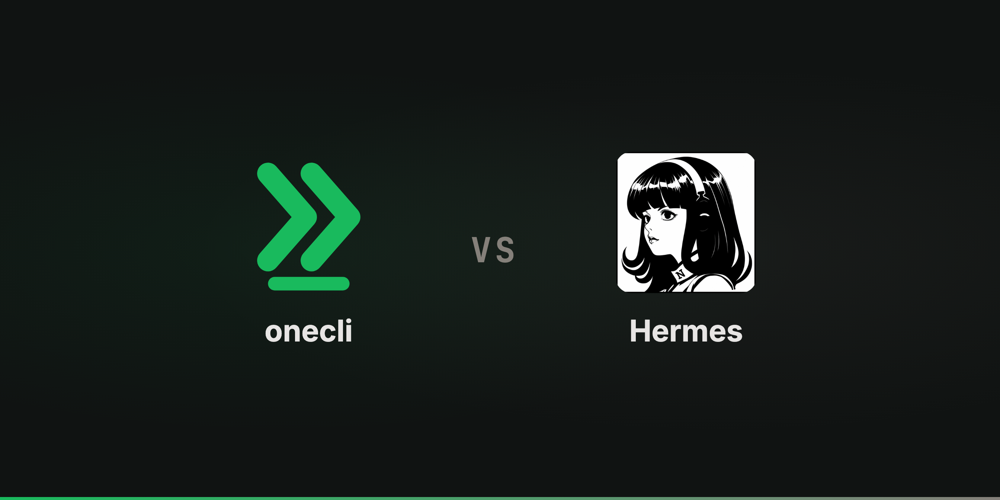
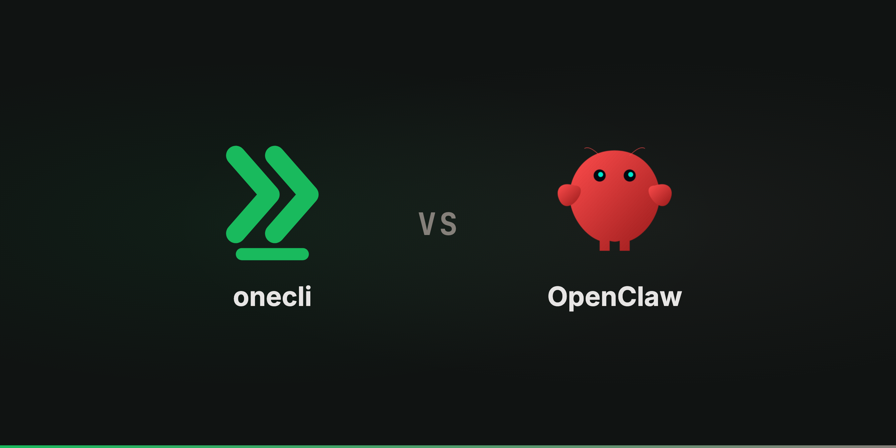

OneCLI vs Grok Bot
xAI's Grok Bot signs in to your tools as a new identity and holds those live sessions on an always-on machine. OneCLI scopes each agent to one employee and injects credentials at the wire.


OneCLI vs Claude Tag
Claude Tag keeps credentials out of the sandbox and injects them at the network boundary, exactly as OneCLI does. Where they part is identity: access belongs to the channel, not the person.


OneCLI vs Hermes
Nous Research's Hermes is the best-engineered personal agent in open source, and it keeps credentials in the box with the model. OneCLI moves the boundary to the wire.


OneCLI vs OpenClaw
OpenClaw is the best personal agent there is, and it holds your credentials in plaintext on your laptop. OneCLI runs an agent per employee in a sandbox that never sees a key.


Want the short version? See what OneCLI actually does.